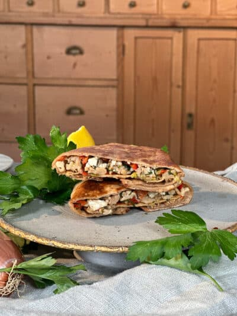

Crunchy wrap met kippengehakt

Ingridiënten
- 300 gr kipgehakt
- 100 gr feta
- 50 gr peterselie
- 2 tenen knoflook
- 1 rode ui
- 1 rode peper
- 1 rode paprika
- 1 el zonnebloemolie
- 4 kleine maistortillas
- 4 grote tortilla's groot
- 2 stengels bosui
-
2 el zonnebloemolie + extra voor het frituren van de mais tortilla.
Bereiding
-
Zet een pan op het vuur en verhit 1 eetlepel zonnebloemolie. Voeg daar
het kipgehakt, de ui, knoflook en paprika aan toe. Laat dit even bakken
tot het gehakt gaar is.
-
Voeg vervolgens de bosui, peterselie, chili en feta aan toe. Haal de pan
van het vuur en zet even opzij.
-
Zet een andere pan op het vuur en vul deze met een laagje olie. Frituur
de kleine mais tortilla tot deze mooi goudbruin en crunchy is.
-
Tijd om de crunchy wrap met kipgehakt te vullen. Leg een grote tarwe
tortilla op je snijplank en vul het met het kipgehaktmengsel. Plaats de
crunchy mais tortilla er bovenop en vouw het dicht als soort cadeautje.
-
Verhit weer een pan met 1 eetlepel zonnebloemolie en schroei het
cadeautje nog even dicht voor 2 minuten aan beide kanten of tot de wrap
aan beide kanten goudbruin is.
- Snijd doormidden en serveer.